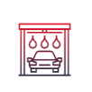
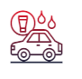
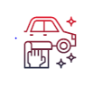
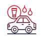

Мойка кузова
С поверхности кузова удаляются пыль, грязь, остатки насекомых и реагенты, которыми посыпают дорожное полотно в холодное время года.

Уборка салона
Убирается весь мусор, чистка ковриков, салон протирается и пылесосится.

Покрытие кузова воском
Воск придает кузову блеск и защищает от внешних воздействий.
Чистка сидений
Удаление грязи и пятен с сидений авто, а также обработка специальными средствами.
Очистка стекол
Удаление разводов и тяжело очищаемых загрязнений со стекол.

Замена масла
Удаление старого масла и замена на новое, также возможна замена сопутствующих фильтров.